Полный список и описание всех русскоязычных книг по FreeBSD
× Версия для печати
Сегодня Рунет перемалывает впечатления от субботнего митинга, а тут я снова попробую толочь свою воду в ступе высоких технологий. Да, российский общественно-политический прогресс велик, говорю это без всякой злой иронии, отчасти даже с восхищением, не все так вот могут взять да и выйти на площадь. Даже тяжело себе представить, что ждет Россию в 2012 году с такими темпами развития гражданского общества.
Ну да ладно, это я немного отвлёкся, а теперь про FreeBSD-родимую.
Когда-то я был заядлым фидошником, кроме того у меня была (и отчасти осталась) мания коллекционировать книги. Совмещая эти два факта воедино: когда-то давным-давно в эхе ru.unix.bsd был соответствующий по теме этой конференции FAQ, где был мой развернутый ответ с описанием всех русскоязычных книг по FreeBSD.
Это такой частый вопрос у новичков: что посоветуете почитать для быстрого и комфортного входа в тему? Поскольку выбор книг на русском есть, да и относительная популярность у системы также имеется, а вопрос этот как-то постоянно всплывает, — я и решил тогда добить его, последовательно описав все книги на русском по FreeBSD, которые у меня были на тот момент (а были у меня все изданные книги).
Давеча, прошло уже более 4 лет с тех пор, а вижу я по статистике поисковых запросов люди все идут и идут на то старенькое описание, вот я и решил обновить его по состоянию на 2011 год.
Итак, тема этого поста: что есть из изданных книг на русском по FreeBSD сейчас + и краткое моё описание их достоинств и недостатков, равно как и их целевой группы.
Я также решил выставить бал для каждой из книг, конечно, это во многом субъективное мнение — но я решил хоть как-то оценить их относительную практическую ценность. Ещё раз повторюсь — эта оценка с позиций сегодняшнего дня, ибо есть там и классные по-настоящему книги, но сегодня устаревшие просто в дупель. Из-за моих перфектционистких претензий я не оценил ни одну из книг в 5 баллов, и отдельно подчеркиваю — подавляющее большинство этих книг предназначено для новичков, здесь не нужно строить никаких иллюзий.
Итак, на данный момент в моем описании ниже последовательно приводятся и описываются ВСЕ книги по FreeBSD на русском языке, которые были изданы на конец 2011 года. Поехали!
Лучшие книги по FreeBSD
1) Брайан Таймэн, Майкл Эбен «FreeBSD. Администрирование: искусство достижения равновесия. Энциклопедия пользователя», 2003 и 2005 годы.
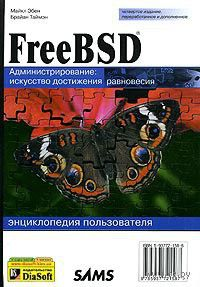
Мне известны как минимум три издания этой, одной из первых книги на русском по FreeBSD — за 2003 год и два за 2005 год. На тот момент они смотрелись достаточно неплохо, была очень хорошая динамика продаж и популярность (даже не знаю, от того что очень хороши были, или от того, что просто на тот момент не было им никаких альтернатив), но вот с точки зрения 2011 года — все эти издания очень устарели.
Все издания ориентируются на начинающих пользователей. Последовательное изложение и описание основных служб и понятий в FreeBSD. Я оцениваю её практическую ценность в 2 балла — это устаревшая книга для новичков.
2) Брайан Таймэн, «FreeBSD 6. Полное руководство», 2009
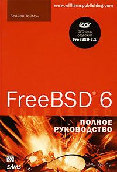
В 2009 году вышла гораздо более качественная, объемная и систематизированная книга от одного из авторов вышеописанной книги — Брайана Таймэна, только называется она теперь «FreeBSD 6. Полное руководство». Книжка очень даже неплохая. Скажу честно, мне очень нравится книжная серия Unleashed, в которой она и вышла. В этой серии всегда издают всеобъемлющие руководства, с максимальным упором на универсальность и подробность изложения.
По структуре, это, конечно, скорее справочник, чем учебник. Смотрится до сих пор она относительно неплохо в качестве подробного введения в тему. Я оцениваю её практическую ценность в 4 балла — книга для новичков и среднего уровня.
Кстати говоря, буквально совсем недавно вышло её второе издание, пока только на английском, вот его-то я бы и посоветовал как идеальную исходную точку для изучения системы, если английский для вас не барьер.
3) Федорчук А. Торн, А. «FreeBSD. Установка, настройка, использование», 2003
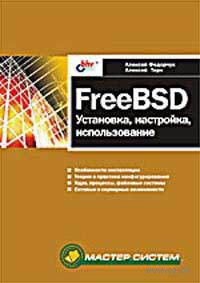
Книга написана отечественными авторами и для начинающих пользователей. Кто не знает кто такой Федорчук? Это известный «пропагандист» Linux и FreeBSD на территории бывшего СССР, умеет рассказывать сложные вещи понятно и нескучно. Поэтому книга отличается легкой неформальностью своего изложения, что делает её более лёгкой для чтения по сравнению с остальными сугубо техническими текстами. С точки зрения 2011 года — читать, конечно, её можно и даже полезно, но это уже скорее история. Я оцениваю её практическую ценность в 2 балла — устаревшая книга для новичков.
4) Федорчук А. «Доступный UNIX: Linux, FreeBSD, DragonFlyBSD, NetBSD, OpenBSD», 2006.
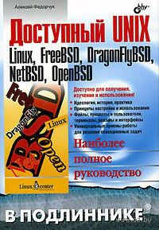
Вслед за этой книгой вышла уже отдельная, сольная книга Федорчука (смотрите о нем выше), которую лучше выбрать для введения по сравнению с первой его книгой: материал здесь будет и более свежий, и лучше систематизированный. Книга описывает более общие вещи верные для всего мира *BSD, с отдельным указанием отличий свойственных каждому отдельному клону, что весьма полезно для расширения кругозора. Лично мне также очень нравится DragonFlyBSD — очень приятно, что здесь есть и про него, хотя и уже весьма старенькие сведения, ибо система эта ну очень сильно развилась с тех пор.
Несмотря на упоминание Linux в названии, автор сильно тяготеет к обзору именно BSD-систем. Очень хорошее обзорное введение в разные Unix-системы, если вы ещё сами не определились что же вам выбрать. Текст читается легко, книга написана качественно. С этой книги многие мои знакомые начали изучение UNIX’а — как сказал один: ощущение было, что меня ведут за руку — все объяснения точны, ясны, понятны. Я оцениваю её практическую ценность в 3 балла — книга для новичков. Отдельно отмечу, что у текста этой книги есть стиль, а это для многих что-то, да значит.
5) Родерик Смит «Полный справочник по FreeBSD» (FreeBSD: The Complete Reference), 2004.
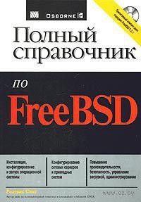
Это справочник для начинающих, а также для пользователей средней квалификации.
Данная книга не подходит всем тем, кто впервые начинает изучение FreeBSD. Описано очень много всего, но при этом достаточно поверхностно, — подходит только в качестве введения в проблематику. Хм, но, не смотря на всё — это хорошая книга, но честно говоря, в 2011 году это уже совсем не то... лучше использовать для справки другие, — более актуальные сетевые источники. Я оцениваю её практическую ценность именно на сегодня в 3 балла — эта книга для новичков.
6) Майкл Лукас «FreeBSD. Подробное руководство» (Absolute BSD. The Ultimate Guide to FreeBSD), 2004.
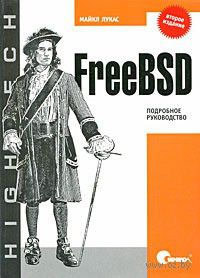
Есть два издания этой книги — за 2004 и 2009 годы. Майкл Лукас известная личность в мире FreeBSD, активный участник FreeBSD Documentation Project, пишет на эту тему очень много и хорошо. В сети огромное количество его мануалов, интервью и прочего фришного графоманского творчества.
Эта книга — его довольно подробное изложение системы почти на 900 страницах. Очень рекомендую, даже с позиции 2011 года книга смотрится очень даже достойно (но брать нужно обязательно последнее издание за 2009 год — оно гораздо лучше). Я оцениваю её практическую ценность в 4 балла — книга для новичков.
7) Сергей Ивановский «Операционная система UNIX FreeBSD: Простой курс системного администрирования для начинающих и опытных пользователей», 2004.
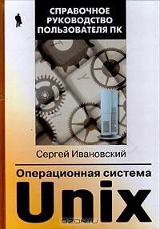
Второе издание, также как и первое её издание — редкостный отстой. Данный автор с маниакальным упорством переиздаёт одну и туже книгу под разными названиями и оформлениями, например, как «Hаиболее часто задаваемые вопросы по FreeBSD», — смотрите не вляпайтесь, купив такого рода «книгу». Гавно редкостное. Жертва начала 90-ых, когда можно было издать что угодно, в условиях отсутствия интернета у большинства.
В данном случае, это просто сборник корявых и ранних переводов каких-то ужасно старинных рукописей по FreeBSD, howto и faqs — все эти раздельные кусочки бессистемно собраны, перемешаны и изданы в виде «как есть». Я оцениваю её практическую ценность в 1 балл — книга для... даже новичку не советую брать её в руки. Каюсь принародно: это единственная книга в моей жизни, которую я сознательно и цинично сжег (использовал на даче для разогрева камина).
8) Маршалл Кирк МакКузик, Джордж В. Hевилл-Hил «FreeBSD. Архитектура и реализация», 2006.
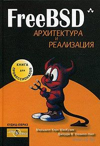
Оперативный русский перевод уже успевшей стать классической и своего рода единственной книги посвящённой внутреннему устройству современной FreeBSD, написанной знаменитыми в мире *BSD авторами. В книге рассматриваются потроха релиза 5.2, естественно, что книга предназначена главным образом для системных программистов. Но, следует сразу предупредить, что из-за изначально огромного объёма материала книга напоминает скорее последовательный конспект устройства FreeBSD, — и не надейтесь найти в ней исчерпывающую энциклопедию по архитектуре FreeBSD.
Что тут говорить — единственная книга в своем роде, если вы интересуетесь системным программированием в FreeBSD — эта книга MUST HAVE, даже, несмотря на поправку с точку зрения прошедшего времени и утраты актуальности, — это очень-очень важная и классная книга. Я оцениваю её практическую ценность в 4 балла — книга для системных программистов и сочувствующих.
9) А. Дидок «Один на один с FreeBSD », 2006
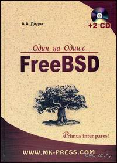
Это толстая и подробная книженция от украинского автора, — мне она ОЧЕНЬ понравилась. Книжка сильно связана с реальными жизненными ситуациями — много практически-полезных примеров. По-моему, эта книга плохо подходит для новичка, то есть для старта. У нас очень редко выходят такого рода книги: здесь мало теории и банальностей (автор почти на каждой странице отсылает к man’у за подробностями), зато очень много практических примеров, сразу чувствуется опыт работы автора в телекоме.
Подобный стиль изложения можно истолковать двояко: она трудна для человека не в теме и начинающих, с другой стороны для тех, кто в теме, не всё так однозначно, потому как автор предлагает свои собственные рецепты для решения повседневных проблем (лично мне так кажется, что в некоторых случаях можно найти варианты и получше — тут уж на кухне каждый свои пять копеек норовит вставить). Это — сборник рецептов готовки с минимумом теории.
В книге описывается ещё относительно актуальная ветка 6.x (это в любом случае лучше, чем большинство вышеприведенных книг, где речь идет вообще о 4.x-.5.x-системах). Рекомендуется всем новичкам, но только после хорошего овладения теорией. Есть много ошибок в самой верстке книги (например, на странице содержания книги много раз настойчиво повторяется сноска на загадочную страницу 40). Я оцениваю её практическую ценность в 4 балла — книга для среднего уровня специалистов.
10) Д. Колисниченко. «FreeBSD. От новичка к профессионалу», 2011
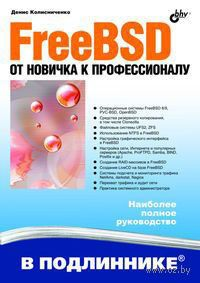
Это я оставил напоследок. У Дениса, большого универсала, который бабахает книгу за книгой на самый большой диапазон тем, вышло уже две книги по FreeBSD. Издание за 2010 год я не буду рассматривать, просто потому, что уже есть издание за 2011 год, уже с чуть другим названием, расширенное и дополненное.
Ну что тут сказать. У Дениса большой опыт в писательстве, но каких-то откровений и глубины от него ждать не нужно. Очень интересно авторское задание-концепция книги, которую сам перед собой ставит в предисловии. Суть в том, что он пытается писать по плану Handbook’a, но дополняя места, которые, по его мнению, там описаны недостаточно подробно или и вовсе опущены. Получается, это своего рода дополнительный смысловой слой, который идеально ложится именно на содержание официального FreeBSD Handbook. Он сам говорит, что прочитав с одной стороны Handbook, а с другой стороны изучив его книгу — все вопросы у читателя-новичка должны быть полностью исчерпаны.
Лично мне эта книга понравилась, хотя на Колесниченко часто и гонят на некоторых форумах, поэтому повторюсь — мнение субъективно, также как понравился и его методологический подход а-ля «расширенные толкования на Handbook». Пожалуй, для новичка и в самом деле это то что нужно, тем более учитывая что эта книга довольно—таки свежая: в ней рассматривается FreeBSD 7. Описывает актуальную систему X-ов и прочие новшества, которые на фоне устаревшей дремучести большинства вышеописанных книг смотрятся очень неплохо. Я оцениваю её практическую ценность в 4 балла — книга идеальная (но обязательно в тесном сочетании с Handbook) для введения в тему начального уровня специалистов.
~
Дополнительно к описанным книгам чисто по FreeBSD, для более широкого развития рекомендую следующую классику:
11) Hемет Э., Снайдер Г., Сибасс С., Хейн Т. «UNIX. Руководство системного администратора»
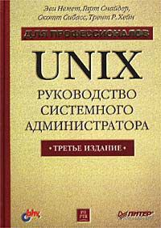
Рекомендую 3-ее её издание от 2002 (и в 2008 году тоже было переиздание) — это воистину универсальная книга, она очень известна и уважаема в мире UNIX-администраторов. В ней параллельно описываются все базовые задачи администрирования и сразу для нескольких популярных Unix-систем, в том числе в последнем её 3-ем издании есть прямые рекомендации по администрированию, в том числе и FreeBSD.
Это качественный продукт, написанный очень сжато, без воды, очень универсально. Вероятно, именно поэтому её трудно будет читать новичку, для профи она будет уже неинтересна, получается, что её целевой потребитель — это среднее звено администраторов. В этой среде её часто называют Библией Администратора. Я оцениваю её практическую ценность в 3 балла.
12) Ю. Вахалия. «UNIX изнутри», 2003
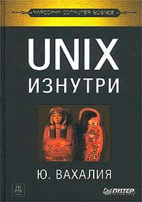
Я считаю эту отечественную книгу идеальной для введения в системное программирование на Unix-системах (любых, не только FreeBSD), своего рода отличным подготовительным этапом (прокладкой) при переходе от чистого администрирования к книгам навроде Маршалла Кирк МакКузика «FreeBSD. Архитектура и реализация». Взять и начать читать последнюю без предварительной подготовки у вас просто не получится, поэтому Вахалия как раз то, что нужно для старта в эту область. Здесь довольно хорошим языком описываются общие и базовые сведения по устройству Unix, которые, думаю, не устареют и через 20 лет. Я оцениваю её практическую ценность в 3 балла.
13) Брайан Керниган и Роб Пайк. UNIX. Программное окружение (The Unix Programming Environment ), 2003
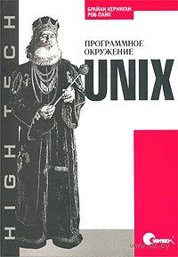
Есть несколько изданий этой книги, это тоже своего рода классика по теме. Книга автора языка C, одного из разработчиков Unix. Вот что они сами пишут о своих целях: «Наша задача — показать философию программирования под UNIX. Поскольку эта философия базируется на отношениях между программами, мы должны большую часть этой книги посвятить обсуждению индивидуальных инструментов, но в контексте их совместного использования, в том числе и для построения новых программ». Как по мне, эта книга тонко балансирует на стыке между продвинутым администрированием системы и её программированием, посему она будет точно полезна для обоих названных категорий граждан.
Естественно, те общие концепции, которые описаны в ней, в равной степени касаются и FreeBSD тоже, и не имеют срока давности как такового. Эту книгу рекомендовал как лучшую для введения Константин Белоусов, ныне входящий в FreeBSD Core Team. Я оцениваю её практическую ценность в силу универсальности и цельности материала в 4 балла.
И заключение, напоминаю новичку: кроме рассмотренных сторонних печатных книг у FreeBSD Project есть своё замечательное и подробное руководство — FreeBSD Handbook, которое переведено в том числе и на русский (немного не совсем актуальная версия), а для начинающих разработчиков тут есть свой FreeBSD Developers’ Handbook. Ну и конечно не нужно бояться первоисточников — man’ы, man’ы и ещё раз man’ы — это наиболее полный источник всевозможных прикладных деталей.